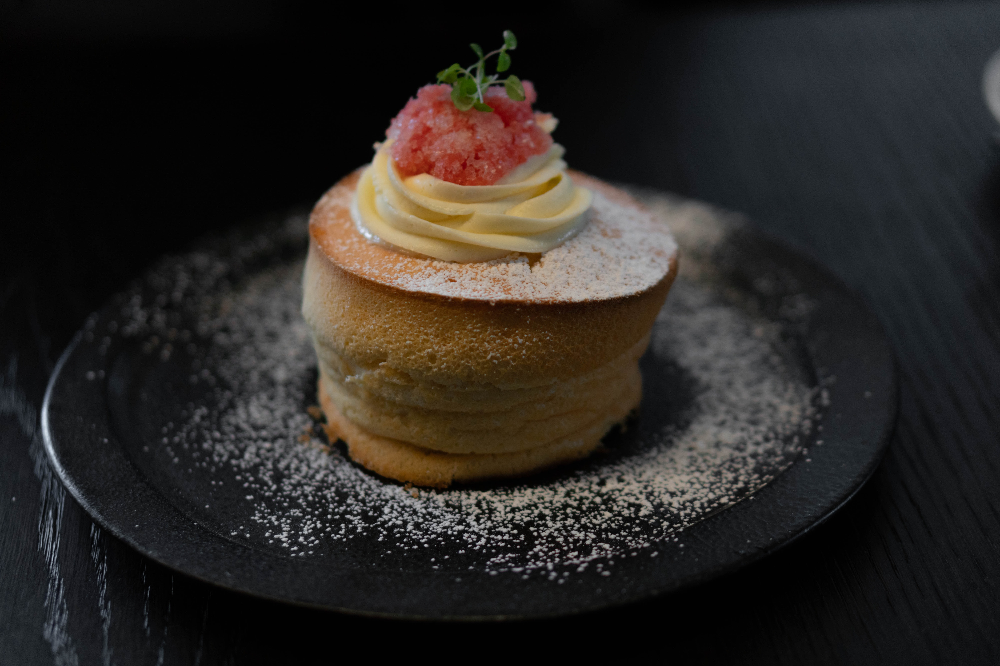

recipe
컵케잌
파운드케이크
수플레팬케이크
수플레 팬케이크 만들기

재료:
달걀2개, 우유 15ml, 바닐라 익스트랙 1ts, 박력분 35g, 베이킹파워 1/2ts, 설탕 25g
노른자에 우유, 바닐라 익스트랙을 넣고 거품기로 잘 섞기
박력분 베이킹파우더는 체에 한번 내려서 넣고 저어주기
흰자에 설탕을 세번 나눠가며 머랭치기
머랭 1/3을 반죽에 넣고 섞기 반복
반죽을 후라이팬에 올려 굽기
주의할점: 반죽을 섞을때 머랭이 꺼지지 않도록하기
약한불에 굽기